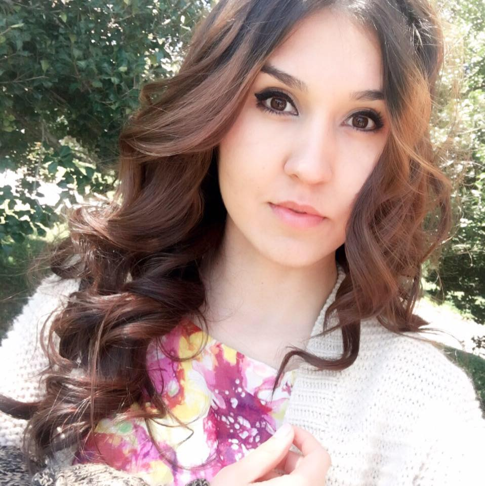

About Me

Hello my name is Anusha I am 23 years old and I am from Tajikistan. Let me tell you a little bit about my country. It is a very small country in Central Asia 93% of our territory are mountains, the city that i grow up in called Dushanbe- the capital.
I speak four languages farsi, russian, english and uzbek. I am a proffessional tennis player. And the last thing i would like to tell you I have recently rescuied a cat, she is adorable, her name is Lucy.
My educational background includes, BA in Economics.
Currently enrolled fulltime in a Full Stack Web Development
certificate program at George Washington University. In Portfolio(footer) I will attach some links to my works